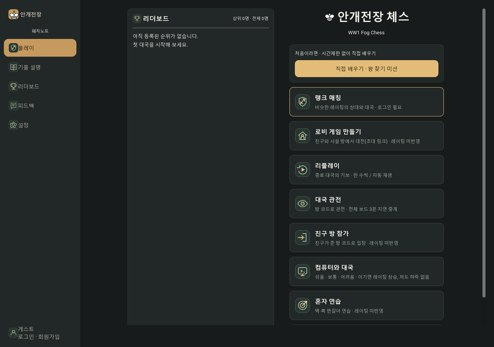
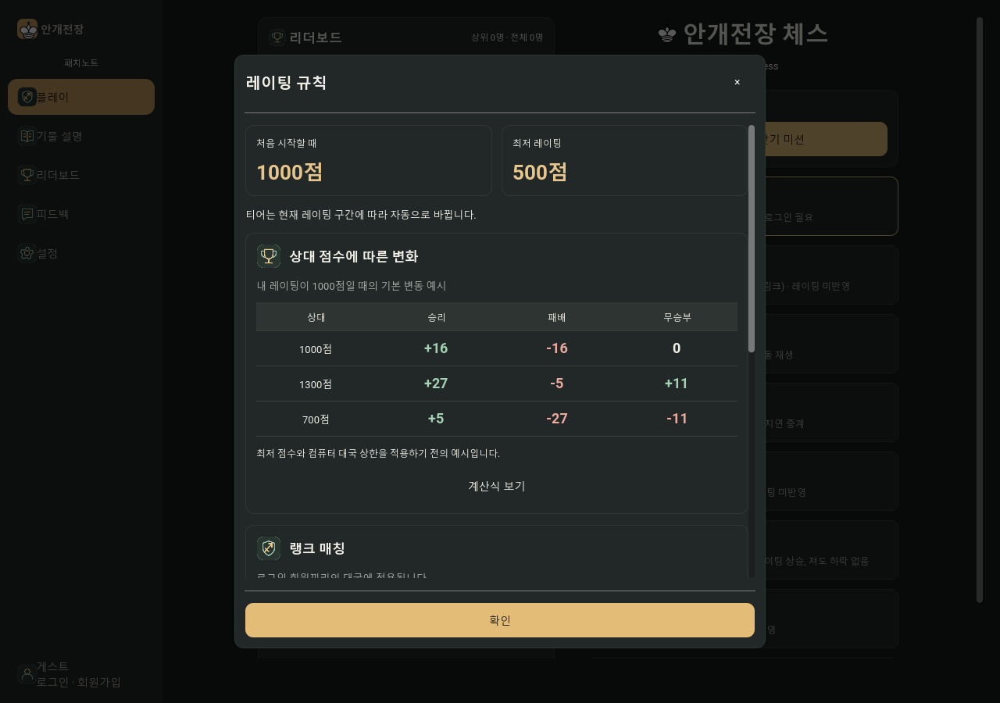
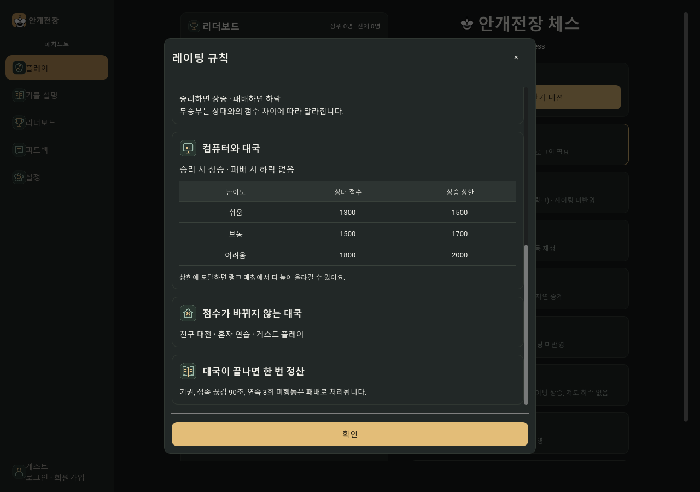
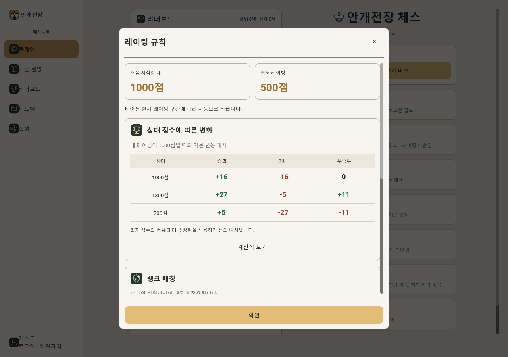
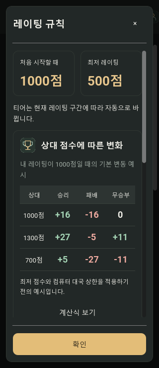

FOGCHESS · UI ASSETS
같은 디자인 언어로,
역할은 더 또렷하게.
플레이 메뉴 8종을 포함한 17종의 SVG 아이콘을 공통 에셋으로 적용했습니다. 리플레이와 관전도 전용 아이콘을 갖습니다. 게임과 동일한 에셋을 다른 화면이나 프로젝트에서도 재사용할 수 있습니다.
아이콘 라이브러리
48×48 viewBox · 둥근 2.2 선 · 골드와 세이지 색상 · 메뉴 40px / 내비게이션 26px. SVG와 사용 안내를 패키지에 포함했습니다. 공통 호출: app._icon(parent, "watch", 40).
실제 적용 화면

레이팅 규칙: 딤드 팝업
리더보드의 ‘레이팅 규칙 보기’를 누르면 독립된 팝업이 열립니다. 시작·최저 점수, 상대 점수별 변화 표, 랭크·컴퓨터·미반영 모드, 종료 정산을 구분했습니다. 계산식은 필요할 때만 펼칠 수 있습니다. 닫기·Esc·확인 후에는 리더보드로 돌아옵니다.

모드별 규칙 보기

밝은 테마와 작은 화면


검증
아이콘·레이팅 UI 55 · 기존 통합 검사 255 — 총 310개 통과. 서버 규칙 값 변경, 닫기·포커스 복귀, 밝은 테마, 320/390px 화면을 확인했습니다. 체스판·기물 디자인 및 서버 규칙은 수정하지 않았습니다. 웹 빌드와 실제 모바일 기기는 이번 검증에 포함하지 않았습니다.
검증 기록 · 변경 내역